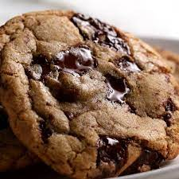

Cookies Recipe

Find hundreds of top-rated recipes for chocolate chip cookies, peanut butter cookies, sugar cookies, and more, complete with reviews and photos.
Ingrident
- ½ cup granulated sugar
- ¾ cup brown sugar, packed
- 1 teaspoon salt
- ½ cup unsalted butter, melted
- 1 egg
Steps
- Do not use chips; instead, opt for a mix of milk or semisweet and dark chocolate chunks.
- let the dough rest overnight or longer for a more complex, toffee-like flavor. Lastly, use an ice cream scooper to get even-sized cookies every time.
- With these little tweaks, the result is a cookie that’s textured on the outside, and soft and gooey on the inside. Absolutely perfect!